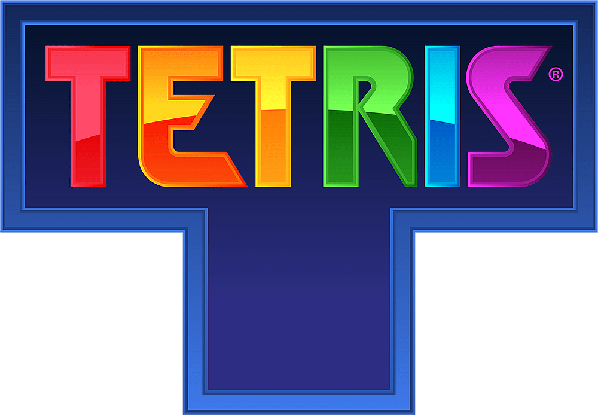

Introdução
Neste projeto iremos analisar e recriar o jogo TETRIS, criado por Alexey Pajitnov em 1984, a partir da ótica da Algebra Linear.
"O jogo consiste em empilhar tetraminós que descem a tela de forma que completem linhas horizontais.
Quando uma linha se forma, ela se desintegra, as camadas superiores descem, e o jogador ganha pontos.
Quando a pilha de peças chega ao topo da tela, a partida se encerra."

Objetivos:
Veremos como o TETRIS pode ser criado e representado por conceitos de Algebra Linear.
Todo jogador em algum momento já se perguntou, será que o TETRIS sorteia as piores peças?
Veremos se as "secas" (demora para um tetrominó voltar a aparecer) são propositais.